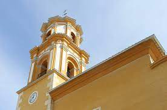
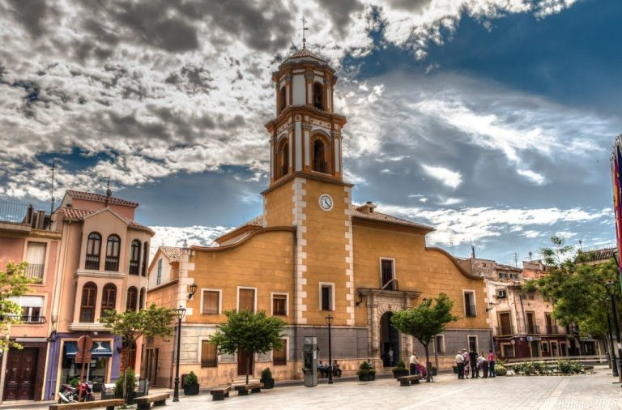
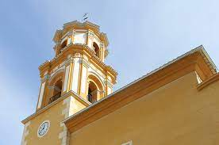
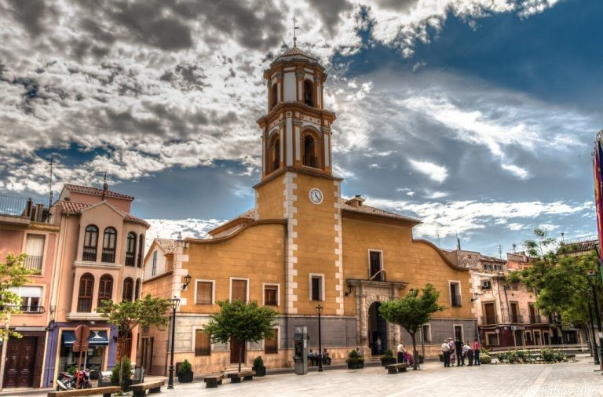

Historia
Comenzó a construirse a finales del siglo xvii, poco después de que Bullas consiguiera la independencia municipal, y se terminó en 1723. El nombre de la iglesia se eligió por votación entre los habitantes del pueblo. Inicialmente la iglesia era dependiente de la Parroquia de Santa María Magdalena en la localidad de Cehegín (Murcia), hasta que en 1804 se constituyó como parroquia autónoma. A finales del siglo xviii, a causa del crecimiento demográfico que había sufrido el pueblo, se procedió a una ampliación del templo. Las obras dirigidas por el arquitecto Jerónimo Martínez de Lara consistieron en añadir dos naves laterales, la sacristía y la torre. Estas obras finalizaron en 1803. Ntra. Señora del Rosario Coronada, Patrona y Alcaldesa Perpetua de la Villa de Bullas Esta dedicada a Nuestra Señora del Rosario Coronada, Patrona de Bullas. En 1981 el templo fue declarado Monumento de Interés Cultural y en 1982 Monumento Nacional. Algunos de sus destacados feligreses son Andrés Pedreño, Jesús David y Daniel Espallardo
Informacion
La iglesia de estilo barroco posee una planta de cruz latina, típica del lugar, con tres naves y transepto que no sobresale en planta. La nave central, de mayor altura y anchura que las laterales, posee tres crujías más el coro, también una bóveda de cañón con arcos fajones. Esta nave principal se cubre en el crucero, con una bóveda semiesférica sobre pechinas en las que se encuentran imágenes del tetramorfos. Las naves laterales tienen bóvedas de arista.